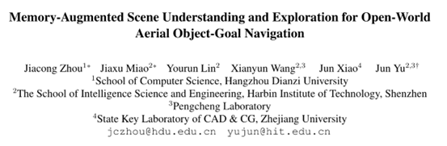
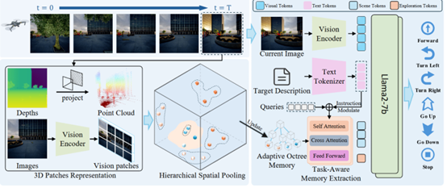
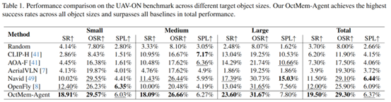

📢 TL;DR： 我们提出了一种记忆增强的视觉语言导航框架 OctMem-Agent，专门用于开放世界空中目标导航（Aerial Object-Goal Navigation）。该框架通过自适应八叉树记忆（Adaptive Octree Memory）将历史 RGB-D 观测构建为层次化三维表示，结合指令引导的记忆查询模块，有效解决了大规模场景下长期记忆缺失的问题。在 UAV-ON 基准上，OctMem-Agent 实现了 SOTA 性能，成功率提升了 7.5%。
2026年2月，计算机视觉顶会 CVPR 2026（IEEE/CVF Conference on Computer Vision and Pattern Recognition）录用论文名单正式公布。由哈尔滨工业大学（深圳）智能科学与工程学院多媒体智能前沿实验室（M3AIL Research Group）博士生周佳聪（第一作者）在俞俊教授、苗嘉旭教授指导下完成的论文《Memory-Augmented Scene Understanding and Exploration for Open-World Aerial Object-Goal Navigation》成功入选本届 CVPR 主会（Main Track）。该研究在无人机具身智能与三维空间导航领域取得了重要突破。

本论文针对开放世界空中导航面临的大规模场景长期记忆与全局理解能力不足的问题，提出了创新性的 OctMem-Agent 框架。其核心贡献包括： 1. 自适应八叉树记忆： 将历史多维观测逐步构建为层次化三维表示，实现了高效的空间存储与长程环境记忆； 2. 指令引导的记忆查询： 通过语言条件化的查询机制，从海量记忆中精准提取与任务相关的空间信息，显著提升了复杂环境下的探索效率与决策精度。

在 UAV-ON（Unmanned Aerial Vehicle Object-Goal Navigation） 基准数据集上的系统评测表明，OctMem-Agent 展现了卓越的导航能力。相比于现有的仅依赖当前观测或短期历史信息的导航方法，本方法在成功率（Success Rate）上实现了 7.5% 的大幅提升。实验结果进一步证明，显式的三维层次化记忆建模能够有效帮助无人机在开放域环境中进行更具逻辑性的空间探索。
本研究由 M3AIL 实验室自主完成，充分展示了团队在具身智能（Embodied AI）、三维视觉理解以及视觉语言导航（VLN）等前沿方向的持续科研攻坚能力。
OctMem-Agent 为复杂低空环境下的无人机自主导航提供了高效的记忆建模方案。未来，团队将进一步探索该记忆框架在动态环境避障、多无人机协同导航等场景的应用，推动更具自主性与鲁棒性的低空具身智能体落地。